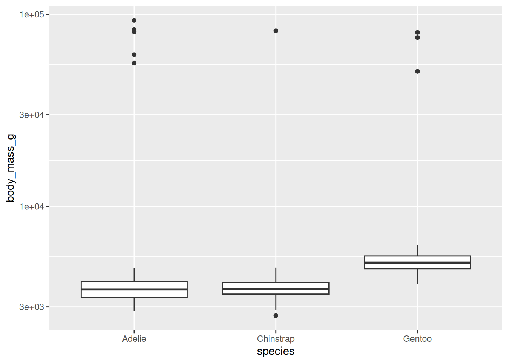
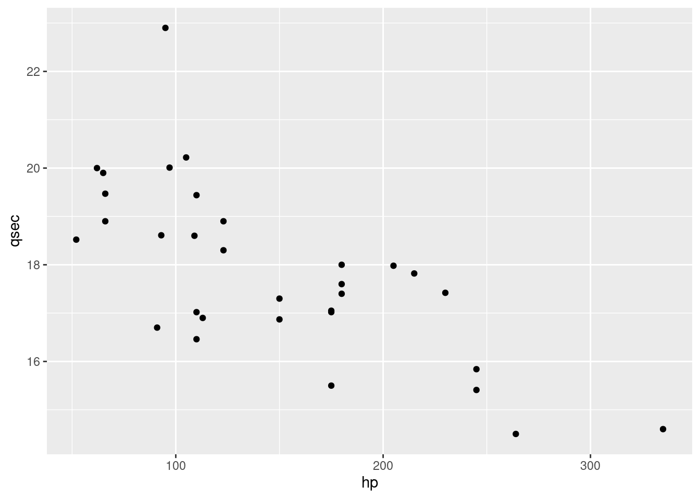
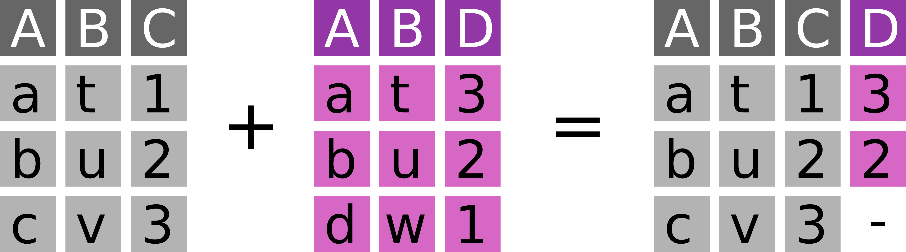
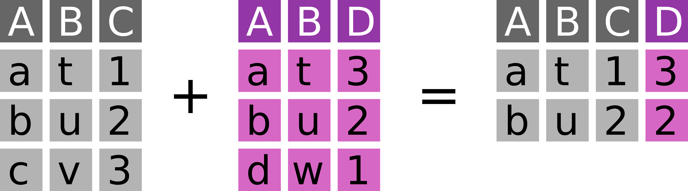
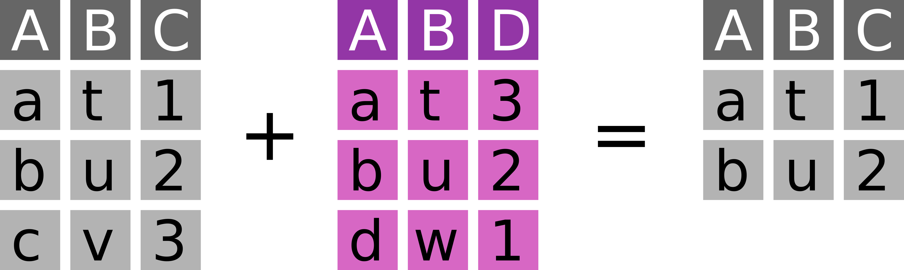

# installing necessary R packages
install.packages(c("tidyverse", "palmerpenguins"))
# preparing data
# (at the end of this tutorial
# you will understand this code)
library(magrittr)
set.seed(5678)
peng_prepped <- palmerpenguins::penguins %>%
dplyr::filter(
!dplyr::if_any(
.cols = tidyselect::everything(),
.fns = is.na
)
) %>%
tibble::add_column(., id = 1:nrow(.), .before = "species")
peng_prepped %>%
dplyr::slice_sample(n = 300) %>%
dplyr::arrange(id) %>%
dplyr::select(-bill_length_mm, -bill_depth_mm) %>%
readr::write_csv("penguins.csv")
peng_prepped %>%
dplyr::slice_sample(n = 300) %>%
dplyr::arrange(id) %>%
dplyr::select(id, bill_length_mm, bill_depth_mm) %>%
readr::write_csv("penguin_bills.csv")7 Introduction to R and the Tidyverse
Note
This session is typically ran held in parallel to the Introduction to Python and Pandas. Participants of the summer schools chose which to attend based on their prior experience. We recommend this session if you have no experience with neither R nor Python.
Self guided: chapter environment setup
For this chapter’s exercises, if not already performed, you will need to download the chapter’s dataset, decompress the archive, and create and activate the conda environment.
Do this, use wget or right click and save to download this Zenodo archive: 10.5281/zenodo.8413026, and unpack
tar xvf r-tidyverse.tar.gz
cd r-tidyverse/You can then create the subsequently activate environment with
conda env create -f r-tidyverse.yml
conda activate r-tidyverse7.1 The working environment
7.1.1 R, RStudio, the tidyverse and penguins
R (R Core Team 2023) is a fully featured programming language, but it excels as an environment for (statistical) data analysis (https://www.r-project.org) RStudio (RStudio Team 2020) is an integrated development environment (IDE) for R (and other languages) (https://www.rstudio.com/products/rstudio)
The tidyverse (Wickham et al. 2019) is a powerful collection of R packages with well-designed and consistent interfaces for the main steps of data analysis: loading, transforming and plotting data (https://www.tidyverse.org). This tutorial works with tidyverse ~v2.0. We will learn about the packages readr, tibble, ggplot2, dplyr, magrittr and tidyr. forcats will be briefly mentioned, but purrr and stringr are left out.
The palmerpenguins package (Horst, Hill, and Gorman 2020) provides a neat example dataset to learn data exploration and visualization in R (https://allisonhorst.github.io/palmerpenguins)
Instructions for running this chapter without conda
If you wish to follow this chapter without installing conda, you can recreate the conda environment and data generation by running the following steps.
- Install R and RStudio for your operating system according to one of the many instructions online (e.g. here)
- Download the .qmd file underlying this webpage here and copy it to a new directory
- Open RStudio and create a new project in this directory with
File->New Project...->Existing directory - Open this very file from the RStudio project, so that you can easily follow along
- Run the
Environment preparation codecode to install necessary R package dependencies and prepare the required data used below
To load RStudio from within your conda environment, please run
rstudioAnd the RStudio window will open.
7.2 Loading data into tibbles
7.2.1 Reading data with readr
With R we usually operate on data in our computer’s memory. The tidyverse provides the package readr to read data from text files into the memory. readr can read from our file system or the internet. It provides functions to read data in almost any (text) format:
readr::read_csv() # .csv files -> see penguins.csv
readr::read_tsv() # .tsv files
readr::read_delim() # tabular files with an arbitrary separator
readr::read_fwf() # fixed width files
readr::read_lines() # read linewise to parse yourself7.2.2 How does the interface of read_csv work?
We can learn more about an R function with the ? operator.
To open a help file for a specific function run ?<function_name> (e.g. ?readr::read_csv) in the R console. readr::read_csv has many options to specify how to read a text file.
read_csv(
file, # The path to the file we want to read
col_names = TRUE, # Are there column names?
col_types = NULL, # Which types do the columns have? NULL -> auto
locale = default_locale(), # How is information encoded in this file?
na = c("", "NA"), # Which values mean "no data"
trim_ws = TRUE, # Should superfluous white-spaces be removed?
skip = 0, # Skip X lines at the beginning of the file
n_max = Inf, # Only read X lines
skip_empty_rows = TRUE, # Should empty lines be ignored?
comment = "", # Should comment lines be ignored?
name_repair = "unique", # How should "broken" column names be fixed
...
)7.2.3 What does readr produce? The tibble!
To read a .csv file (here "penguins.csv") into a variable (here peng_auto) run.
peng_auto <- readr::read_csv("penguins.csv")Rows: 300 Columns: 7
── Column specification ────────────────────────────────────────────────────────
Delimiter: ","
chr (3): species, island, sex
dbl (4): id, flipper_length_mm, body_mass_g, year
ℹ Use `spec()` to retrieve the full column specification for this data.
ℹ Specify the column types or set `show_col_types = FALSE` to quiet this message.readr first prints some information on the number and type of rows and columns it discovered in the file.
It automatically detects column types – but you can also define them manually.
peng <- readr::read_csv(
"penguins.csv",
col_types = "iccddcc" # this string encodes the desired types for each column
)It then returns an in-memory representation of this data, a tibble.
A tibble is a “data frame”, a tabular data structure with rows and columns. Unlike a simple array, each column can have another data type.
7.2.4 How to look at a tibble?
Typing the name of any object into the R console will print an overview to the console.
peng# A tibble: 300 × 7
id species island flipper_length_mm body_mass_g sex year
<int> <chr> <chr> <dbl> <dbl> <chr> <chr>
1 1 Adelie Torgersen 181 3750 male 2007
2 2 Adelie Torgersen 186 3800 female 2007
3 4 Adelie Torgersen 193 3450 female 2007
4 5 Adelie Torgersen 190 3650 male 2007
5 6 Adelie Torgersen 181 3625 female 2007
6 7 Adelie Torgersen 195 4675 male 2007
7 9 Adelie Torgersen 191 3800 male 2007
8 10 Adelie Torgersen 198 4400 male 2007
9 11 Adelie Torgersen 185 3700 female 2007
10 12 Adelie Torgersen 195 3450 female 2007
# ℹ 290 more rowsBut there are various other ways to inspect the content of a tibble
str(peng) # a structural overview of an R object
summary(peng) # a human-readable summary of an R object
View(peng) # open RStudio's interactive data browser7.3 Plotting data in tibbles
7.3.1 ggplot2 and the “grammar of graphics”
To understand and present data, we usually have to visualize it.
ggplot2 is an R package that offers an unusual, but powerful and logical interface for this task (Wickham 2016). The following example describes a stacked bar chart.
library(ggplot2) # Loading a library to use its functions without ::ggplot( # Every plot starts with a call to the ggplot() function
data = peng # This function can also take the input tibble
) + # The plot consists of individual functions linked with "+"
geom_bar( # "geoms" define the plot layers we want to draw
mapping = aes( # The aes() function maps variables to visual properties
x = island, # publication_year -> x-axis
fill = species # community_type -> fill color
)
)
A geom_* combines data (here peng), a geometry (here vertical, stacked bars) and a statistical transformation (here counting the number of penguins per island and species). ggplot2 features many such geoms: A good overview is provided by this cheatsheet: https://rstudio.github.io/cheatsheets/html/data-visualization.html.
Beyond geoms, a ggplot plot can be further specified with (among others) scales, facets and themes.
7.3.2 scales control the behaviour of visual elements
Here is another plot to demonstrate this: Boxplots of penguin weight per species.
ggplot(peng) +
geom_boxplot(aes(x = species, y = body_mass_g))Let’s assume we had some extreme outliers in this dataset. To simulate this, we replace some random weights with extreme values.
set.seed(1234) # we set a seed for reproducible randomness
peng_out <- peng
peng_out$body_mass_g[sample(1:nrow(peng_out), 10)] <- 50000 + 50000 * runif(10)Now we plot the dataset with these “outliers”.
ggplot(peng_out) +
geom_boxplot(aes(x = species, y = body_mass_g))
This is not well readable, because the extreme outliers dictate the scale of the y-axis. A 50+kg penguin is a scary thought and we would probably remove these outliers, but let’s assume they are valid observation we want to include in the plot.
To mitigate this issue we can change the scale of different visual elements - e.g. the y-axis.
ggplot(peng_out) +
geom_boxplot(aes(x = species, y = body_mass_g)) +
scale_y_log10() # adding the log-scale improves readability
We will now go back to the normal dataset without the artificial outliers.
7.3.3 Colour scales
(Fill) colour is a visual element of a plot and its scaling can be adjusted as well.
ggplot(peng) +
geom_boxplot(aes(x = species, y = body_mass_g, fill = species)) +
scale_fill_viridis_d(option = "C")
We use the scale_* function to select one of the visually appealing (and robust to colourblindness) viridis colour palettes (https://cran.r-project.org/web/packages/viridis/vignettes/intro-to-viridis.html).
7.3.4 More variables! Defining plot matrices via facets
In the previous example we didn’t add additional information with the fill colour, as the plot already distinguished by species on the x-axis.
We can instead use colour to encode more information, for example by mapping the variable sex to it.
ggplot(peng) +
geom_boxplot(aes(x = species, y = body_mass_g, fill = sex))
Another way to visualize more variables in one plot is to split the plot by categories into facets, so sub-plots per category.
Here we split by sex, which is already mapped to the fill colour.
ggplot(peng) +
geom_boxplot(aes(x = species, y = body_mass_g, fill = sex)) +
facet_wrap(~sex)
The fill colour is therefore free again to show yet another variable, for example the year a given penguin was examined.
ggplot(peng) +
geom_boxplot(aes(x = species, y = body_mass_g, fill = year)) +
facet_wrap(~sex)
7.3.5 Setting purely aesthetic settings with theme
Aesthetic changes can be applied as part of the theme, which allows for very detailed configuration (see ?theme).
Here we rotate the x-axis labels by 45°, which often helps to resolve overplotting.
ggplot(peng) +
geom_boxplot(aes(x = species, y = body_mass_g, fill = year)) +
facet_wrap(~sex) +
theme(axis.text.x = element_text(angle = 45, hjust = 1, vjust = 1))7.3.6 Ordering elements in a plot with factors
R supports defining ordinal data with factors. This can be used to set the order of elements in a plot, e.g. the order of bars in a bar chart.
We do not cover factors beyond the following example here, although the tidyverse includes a package (forcats) specifically for that purpose.
Elements based on character columns are generally ordered alphabetically.
ggplot(peng) +
geom_bar(aes(x = species)) # bars are alphabetically orderedWith forcats::fct_reorder we can transform an input vector to a factor, ordered by a summary statistic (even based on another vector).
peng2 <- peng
peng2$species_ordered <- forcats::fct_reorder(
peng2$species,
peng2$species, length
)With this change, the plot will be ordered according to the intrinsic order defined for species_ordered.
ggplot(peng2) +
geom_bar(aes(x = species_ordered)) # bars are ordered by size
7.3.7 Exercise
Look at the
mtcarsdataset and read up on the meaning of its variables with the help operator?.mtcarsis a test dataset integrated in R and can be accessed by typingmtcarsin the consoleVisualize the relationship between Gross horsepower and 1/4 mile time
- Integrate the Number of cylinders into your plot as an additional variable
Possible solutions
?mtcarsggplot(mtcars) +
geom_point(aes(x = hp, y = qsec))
ggplot(mtcars) +
geom_point(aes(x = hp, y = qsec, color = as.factor(cyl)))
7.4 Conditional queries on tibbles
7.4.1 Selecting columns and filtering rows with select and filter
The dplyr package includes powerful functions to subset data in tibbles based on conditions. dplyr::select allows to select columns.
dplyr::select(peng, id, flipper_length_mm) # reduce tibble to two columns# A tibble: 300 × 2
id flipper_length_mm
<int> <dbl>
1 1 181
2 2 186
3 4 193
4 5 190
5 6 181
# ℹ 295 more rowsdplyr::select(peng, -island, -flipper_length_mm) # remove two columns# A tibble: 300 × 5
id species body_mass_g sex year
<int> <chr> <dbl> <chr> <chr>
1 1 Adelie 3750 male 2007
2 2 Adelie 3800 female 2007
3 4 Adelie 3450 female 2007
4 5 Adelie 3650 male 2007
5 6 Adelie 3625 female 2007
# ℹ 295 more rowsdplyr::filter allows for conditional filtering of rows.
dplyr::filter(peng, year == 2007) # penguins examined in 2007# A tibble: 93 × 7
id species island flipper_length_mm body_mass_g sex year
<int> <chr> <chr> <dbl> <dbl> <chr> <chr>
1 1 Adelie Torgersen 181 3750 male 2007
2 2 Adelie Torgersen 186 3800 female 2007
3 4 Adelie Torgersen 193 3450 female 2007
4 5 Adelie Torgersen 190 3650 male 2007
5 6 Adelie Torgersen 181 3625 female 2007
# ℹ 88 more rowsdplyr::filter(peng, year == 2007 |
year == 2009) # penguins examined in 2007 OR 2009# A tibble: 198 × 7
id species island flipper_length_mm body_mass_g sex year
<int> <chr> <chr> <dbl> <dbl> <chr> <chr>
1 1 Adelie Torgersen 181 3750 male 2007
2 2 Adelie Torgersen 186 3800 female 2007
3 4 Adelie Torgersen 193 3450 female 2007
4 5 Adelie Torgersen 190 3650 male 2007
5 6 Adelie Torgersen 181 3625 female 2007
# ℹ 193 more rowsdplyr::filter(
peng, # an alternative way to express
year %in% c(2007, 2009)
) # OR with the match operator "%in%"# A tibble: 198 × 7
id species island flipper_length_mm body_mass_g sex year
<int> <chr> <chr> <dbl> <dbl> <chr> <chr>
1 1 Adelie Torgersen 181 3750 male 2007
2 2 Adelie Torgersen 186 3800 female 2007
3 4 Adelie Torgersen 193 3450 female 2007
4 5 Adelie Torgersen 190 3650 male 2007
5 6 Adelie Torgersen 181 3625 female 2007
# ℹ 193 more rowsdplyr::filter(peng, species == "Adelie" &
body_mass_g >= 4000) # Adelie penguins heavier than 4kg# A tibble: 29 × 7
id species island flipper_length_mm body_mass_g sex year
<int> <chr> <chr> <dbl> <dbl> <chr> <chr>
1 7 Adelie Torgersen 195 4675 male 2007
2 10 Adelie Torgersen 198 4400 male 2007
3 13 Adelie Torgersen 197 4500 male 2007
4 31 Adelie Dream 196 4150 male 2007
5 39 Adelie Dream 196 4400 male 2007
# ℹ 24 more rows7.4.2 Chaining functions together with the pipe %>%
A core feature of the tidyverse is the pipe %>% in the magrittr package. This ‘infix’ operator allows to chain data and operations for concise and clear data analysis syntax.
library(magrittr)
peng %>% dplyr::filter(year == 2007)# A tibble: 93 × 7
id species island flipper_length_mm body_mass_g sex year
<int> <chr> <chr> <dbl> <dbl> <chr> <chr>
1 1 Adelie Torgersen 181 3750 male 2007
2 2 Adelie Torgersen 186 3800 female 2007
3 4 Adelie Torgersen 193 3450 female 2007
4 5 Adelie Torgersen 190 3650 male 2007
5 6 Adelie Torgersen 181 3625 female 2007
# ℹ 88 more rowsIt forwards the LHS (left-hand side) as the first argument of the function appearing on the RHS (right-hand side), which enables sequences of functions (“tidyverse style”).
peng %>%
dplyr::select(id, species, body_mass_g) %>%
dplyr::filter(species == "Adelie" & body_mass_g >= 4000) %>%
nrow() # count the resulting rows[1] 29magrittr also offers some more operators, among which the extraction %$% is particularly useful to easily extract individual variables.
peng %>%
dplyr::filter(island == "Biscoe") %$%
species %>% # extract the species column as a vector
unique() # get the unique elements of said vector[1] "Adelie" "Gentoo"Here we already use the base R summary function unique.
7.4.3 Summary statistics in base R
Summarising and counting data is indispensable and R offers all basic operations you would expect in its base package.
chinstraps_weights <- peng %>%
dplyr::filter(species == "Chinstrap") %$%
body_mass_g
length(chinstraps_weights) # length/size of a vector[1] 63unique(chinstraps_weights) # unique elements of a vector [1] 3500 3900 3650 3525 3725 3950 3250 3750 4150 3700 3800 3775 4050 3300 3450
[16] 4400 3400 2900 4550 3200 4300 3350 4100 3600 3850 4800 2700 4500 3550 3675
[31] 4450 3325 4000min(chinstraps_weights) # minimum[1] 2700max(chinstraps_weights) # maximum[1] 4800mean(chinstraps_weights) # mean[1] 3751.19median(chinstraps_weights) # median[1] 3725var(chinstraps_weights) # variance[1] 153032.8sd(chinstraps_weights) # standard deviation[1] 391.1941quantile(chinstraps_weights, probs = 0.75) # quantiles for the given probabilities 75%
3975 Many of these functions can ignore missing values with an option na.rm = TRUE.
7.4.4 Group-wise summaries with group_by and summarise
These summary statistics are particular useful when applied to conditional subsets of a dataset.
dplyr allows such summary operations with a combination of the functions group_by and summarise, where the former tags a tibble with categories based on its variables and the latter reduces it to these groups while simultanously creating new columns.
peng %>%
dplyr::group_by(species) %>% # group the tibble by the material column
dplyr::summarise(
min_weight = min(body_mass_g), # new col: min weight for each group
median_weight = median(body_mass_g), # new col: median weight for each group
max_weight = max(body_mass_g) # new col: max weight for each group
)# A tibble: 3 × 4
species min_weight median_weight max_weight
<chr> <dbl> <dbl> <dbl>
1 Adelie 2850 3650 4775
2 Chinstrap 2700 3725 4800
3 Gentoo 3950 5050 6300Grouping can also be applied across multiple columns at once.
peng %>%
dplyr::group_by(species, year) %>% # group by species and year
dplyr::summarise(
n = dplyr::n(), # a new column: number of penguins for each group
.groups = "drop" # drop the grouping after this summary operation
)# A tibble: 9 × 3
species year n
<chr> <chr> <int>
1 Adelie 2007 38
2 Adelie 2008 45
3 Adelie 2009 43
4 Chinstrap 2007 23
5 Chinstrap 2008 18
# ℹ 4 more rowsIf we group by more than one variable, then summarise will not entirely remove the group tagging when generating the result dataset. We can force this with .groups = "drop" to avoid undesired behaviour with this dataset later on.
7.4.5 Sorting and slicing tibbles with arrange and slice
dplyr allows to arrange tibbles by one or multiple columns.
peng %>% dplyr::arrange(sex) # sort by sex# A tibble: 300 × 7
id species island flipper_length_mm body_mass_g sex year
<int> <chr> <chr> <dbl> <dbl> <chr> <chr>
1 2 Adelie Torgersen 186 3800 female 2007
2 4 Adelie Torgersen 193 3450 female 2007
3 6 Adelie Torgersen 181 3625 female 2007
4 11 Adelie Torgersen 185 3700 female 2007
5 12 Adelie Torgersen 195 3450 female 2007
# ℹ 295 more rowspeng %>% dplyr::arrange(sex, body_mass_g) # sort by sex and weight# A tibble: 300 × 7
id species island flipper_length_mm body_mass_g sex year
<int> <chr> <chr> <dbl> <dbl> <chr> <chr>
1 304 Chinstrap Dream 192 2700 female 2008
2 53 Adelie Biscoe 181 2850 female 2008
3 59 Adelie Biscoe 184 2850 female 2008
4 49 Adelie Biscoe 187 2900 female 2008
5 111 Adelie Torgersen 188 2900 female 2009
# ℹ 295 more rowspeng %>% dplyr::arrange(dplyr::desc(body_mass_g)) # sort descending# A tibble: 300 × 7
id species island flipper_length_mm body_mass_g sex year
<int> <chr> <chr> <dbl> <dbl> <chr> <chr>
1 164 Gentoo Biscoe 221 6300 male 2007
2 179 Gentoo Biscoe 230 6050 male 2007
3 260 Gentoo Biscoe 222 6000 male 2009
4 224 Gentoo Biscoe 223 5950 male 2008
5 160 Gentoo Biscoe 213 5850 male 2007
# ℹ 295 more rowsSorting also works within groups and can be paired with slice to extract extreme values per group.
Here we extract the heaviest individuals per species.
peng %>%
dplyr::group_by(species) %>% # group by species
dplyr::arrange(dplyr::desc(body_mass_g)) %>% # sort by weight within (!) groups
dplyr::slice_head(n = 3) %>% # keep the first three penguins per group
dplyr::ungroup() # remove the still lingering grouping# A tibble: 9 × 7
id species island flipper_length_mm body_mass_g sex year
<int> <chr> <chr> <dbl> <dbl> <chr> <chr>
1 104 Adelie Biscoe 197 4775 male 2009
2 96 Adelie Biscoe 203 4725 male 2009
3 76 Adelie Torgersen 196 4700 male 2008
4 303 Chinstrap Dream 210 4800 male 2008
5 295 Chinstrap Dream 205 4550 male 2008
# ℹ 4 more rowsSlicing is also the relevant operation to take random samples from the observations in a tibble.
peng %>% dplyr::slice_sample(n = 10)# A tibble: 10 × 7
id species island flipper_length_mm body_mass_g sex year
<int> <chr> <chr> <dbl> <dbl> <chr> <chr>
1 47 Adelie Biscoe 190 3450 female 2008
2 239 Gentoo Biscoe 214 4850 female 2009
3 221 Gentoo Biscoe 209 4600 female 2008
4 104 Adelie Biscoe 197 4775 male 2009
5 138 Adelie Dream 190 3725 male 2009
# ℹ 5 more rows7.4.6 Exercise
For this exercise we once more go back to the mtcars dataset. See ?mtcars for details
- Determine the number of cars with four forward gears (
gear) in themtcarsdataset
- Determine the mean 1/4 mile time (
qsec) per Number of cylinders (cyl) group
- Identify the least efficient cars for both transmission types (
am)
Possible solutions
mtcars %>%
dplyr::filter(gear == 4) %>%
nrow()[1] 12mtcars %>%
dplyr::group_by(cyl) %>%
dplyr::summarise(
qsec_mean = mean(qsec)
)# A tibble: 3 × 2
cyl qsec_mean
<dbl> <dbl>
1 4 19.1
2 6 18.0
3 8 16.8mtcars2 <- tibble::rownames_to_column(mtcars, var = "car")
mtcars2 %>%
dplyr::group_by(am) %>%
dplyr::arrange(mpg) %>%
dplyr::slice_head() %$%
car[1] "Cadillac Fleetwood" "Maserati Bora" 7.5 Transforming and manipulating tibbles
7.5.1 Renaming and reordering columns with rename and relocate
Columns in tibbles can be renamed with dplyr::rename.
peng %>% dplyr::rename(penguin_name = id) # rename a column# A tibble: 300 × 7
penguin_name species island flipper_length_mm body_mass_g sex year
<int> <chr> <chr> <dbl> <dbl> <chr> <chr>
1 1 Adelie Torgersen 181 3750 male 2007
2 2 Adelie Torgersen 186 3800 female 2007
3 4 Adelie Torgersen 193 3450 female 2007
4 5 Adelie Torgersen 190 3650 male 2007
5 6 Adelie Torgersen 181 3625 female 2007
# ℹ 295 more rowsAnd with dplyr::relocate they can be reordered.
peng %>% dplyr::relocate(year, .before = species) # reorder columns# A tibble: 300 × 7
id year species island flipper_length_mm body_mass_g sex
<int> <chr> <chr> <chr> <dbl> <dbl> <chr>
1 1 2007 Adelie Torgersen 181 3750 male
2 2 2007 Adelie Torgersen 186 3800 female
3 4 2007 Adelie Torgersen 193 3450 female
4 5 2007 Adelie Torgersen 190 3650 male
5 6 2007 Adelie Torgersen 181 3625 female
# ℹ 295 more rowsAdding columns to tibbles with mutate and transmute.
A common application of data manipulation is adding new, derived columns, that combine or modify the information in the already available columns. dplyr offers this core feature with the mutate function.
peng %>%
dplyr::mutate( # add a column that
kg = body_mass_g / 1000 # manipulates an existing column
)# A tibble: 300 × 8
id species island flipper_length_mm body_mass_g sex year kg
<int> <chr> <chr> <dbl> <dbl> <chr> <chr> <dbl>
1 1 Adelie Torgersen 181 3750 male 2007 3.75
2 2 Adelie Torgersen 186 3800 female 2007 3.8
3 4 Adelie Torgersen 193 3450 female 2007 3.45
4 5 Adelie Torgersen 190 3650 male 2007 3.65
5 6 Adelie Torgersen 181 3625 female 2007 3.62
# ℹ 295 more rowsdplyr::transmute has the same interface as dplyr::mutate, but it removes all columns except for the newly created ones.
peng %>%
dplyr::transmute(
id = paste("Penguin Nr.", id), # overwrite this column
flipper_length_mm # select this column
)# A tibble: 300 × 2
id flipper_length_mm
<chr> <dbl>
1 Penguin Nr. 1 181
2 Penguin Nr. 2 186
3 Penguin Nr. 4 193
4 Penguin Nr. 5 190
5 Penguin Nr. 6 181
# ℹ 295 more rowstibble::add_column behaves as dplyr::mutate, but gives more control over column position.
peng %>% tibble::add_column(
flipper_length_cm = .$flipper_length_mm / 10, # not the . representing the LHS of the pipe
.after = "flipper_length_mm"
)# A tibble: 300 × 8
id species island flipper_length_mm flipper_length_cm body_mass_g sex
<int> <chr> <chr> <dbl> <dbl> <dbl> <chr>
1 1 Adelie Torgersen 181 18.1 3750 male
2 2 Adelie Torgersen 186 18.6 3800 female
3 4 Adelie Torgersen 193 19.3 3450 female
4 5 Adelie Torgersen 190 19 3650 male
5 6 Adelie Torgersen 181 18.1 3625 female
# ℹ 295 more rows
# ℹ 1 more variable: year <chr>dplyr::mutate can also be combined with dplyr::group_by (instead of dplyr::summarise) to add information on a group level. This is relevant, when a value for an individual entity should be put into context of a group-wise summary statistic.
peng %>%
dplyr::group_by(species, sex, year) %>%
dplyr::mutate(
mean_weight = mean(body_mass_g, na.rm = T),
relation_to_mean = body_mass_g / mean_weight
) %>%
dplyr::ungroup() %>%
dplyr::select(id, species, sex, year, relation_to_mean) %>%
# mutate does not remove rows, unlike summarise, so we use select
dplyr::arrange(dplyr::desc(relation_to_mean))# A tibble: 300 × 5
id species sex year relation_to_mean
<int> <chr> <chr> <chr> <dbl>
1 104 Adelie male 2009 1.21
2 96 Adelie male 2009 1.20
3 274 Chinstrap female 2007 1.17
4 7 Adelie male 2007 1.17
5 303 Chinstrap male 2008 1.16
# ℹ 295 more rows7.5.2 Conditional operations with ifelse, case_when and case_match
ifelse allows to implement conditional mutate operations, that consider information from other columns.
peng %>% dplyr::mutate(
weight = ifelse(
test = body_mass_g >= 4200, # is weight below or above mean weight?
yes = "above mean",
no = "below mean"
)
)# A tibble: 300 × 8
id species island flipper_length_mm body_mass_g sex year weight
<int> <chr> <chr> <dbl> <dbl> <chr> <chr> <chr>
1 1 Adelie Torgersen 181 3750 male 2007 below mean
2 2 Adelie Torgersen 186 3800 female 2007 below mean
3 4 Adelie Torgersen 193 3450 female 2007 below mean
4 5 Adelie Torgersen 190 3650 male 2007 below mean
5 6 Adelie Torgersen 181 3625 female 2007 below mean
# ℹ 295 more rowsifelse gets cumbersome easily. dplyr::case_when is more readable and scales much better for this application.
peng %>% dplyr::mutate(
weight = dplyr::case_when(
body_mass_g >= 4200 ~ "above mean", # the number of conditions is arbitrary
body_mass_g < 4200 ~ "below mean",
TRUE ~ "unknown" # TRUE catches all remaining cases
)
)# A tibble: 300 × 8
id species island flipper_length_mm body_mass_g sex year weight
<int> <chr> <chr> <dbl> <dbl> <chr> <chr> <chr>
1 1 Adelie Torgersen 181 3750 male 2007 below mean
2 2 Adelie Torgersen 186 3800 female 2007 below mean
3 4 Adelie Torgersen 193 3450 female 2007 below mean
4 5 Adelie Torgersen 190 3650 male 2007 below mean
5 6 Adelie Torgersen 181 3625 female 2007 below mean
# ℹ 295 more rowsdplyr::case_match is similar, but unlike dplyr::case_when it does not check logical expressions, but matches by value.
peng %>%
dplyr::mutate(
island_rating = dplyr::case_match(
island,
"Torgersen" ~ "My favourite island",
"Biscoe" ~ "Overrated tourist trap",
"Dream" ~ "Lost my wallet there. 4/10"
)
) %>%
# here we use group_by+summarise only to show the result
dplyr::group_by(island, island_rating) %>%
dplyr::summarise(.groups = "drop")# A tibble: 3 × 2
island island_rating
<chr> <chr>
1 Biscoe Overrated tourist trap
2 Dream Lost my wallet there. 4/10
3 Torgersen My favourite island 7.5.3 Switching between long and wide data with pivot_longer and pivot_wider
To simplify certain analysis or plotting operations data often has to be transformed from a wide to a long format or vice versa (Figure 7.1).

- A table in wide format has N key columns and N value columns.
- A table in long format has N key columns, one descriptor column and one value column.
Here is an example of a wide dataset. It features information about the number of cars sold per year per brand at a dealership.
carsales <- tibble::tribble(
~brand, ~`2014`, ~`2015`, ~`2016`, ~`2017`,
"BMW", 20, 25, 30, 45,
"VW", 67, 40, 120, 55
)
carsales# A tibble: 2 × 5
brand `2014` `2015` `2016` `2017`
<chr> <dbl> <dbl> <dbl> <dbl>
1 BMW 20 25 30 45
2 VW 67 40 120 55Wide format data becomes a problem, when the columns are semantically identical. This dataset is in wide format and we can not easily plot it. We generally prefer data in long format, although it is more verbose with more duplication.
To transform this dataset to a long format, we can apply tidyr::pivot_longer.
carsales_long <- carsales %>% tidyr::pivot_longer(
cols = tidyselect::num_range(
"",
range = 2014:2017
), # define a set of columns to transform
names_to = "year", # the name of the descriptor column we want
names_transform = as.integer, # a transformation function to apply to the names
values_to = "sales" # the name of the value column we want
)
carsales_long# A tibble: 8 × 3
brand year sales
<chr> <int> <dbl>
1 BMW 2014 20
2 BMW 2015 25
3 BMW 2016 30
4 BMW 2017 45
5 VW 2014 67
# ℹ 3 more rowsWide datasets are not always the wrong choice, for example for adjacency matrices to represent graphs, covariance matrices or other pairwise statistics. When data gets big, then wide formats can be significantly more efficient (e.g. for spatial data).
So transform data from long to wide, we can use tidyr::pivot_wider
carsales_wide <- carsales_long %>% tidyr::pivot_wider(
id_cols = "brand", # the set of id columns that should not be changed
names_from = year, # the descriptor column with the names of the new columns
values_from = sales # the value column from which the values should be extracted
)
carsales_wide# A tibble: 2 × 5
brand `2014` `2015` `2016` `2017`
<chr> <dbl> <dbl> <dbl> <dbl>
1 BMW 20 25 30 45
2 VW 67 40 120 557.5.4 Exercise
- Move the column
gearto the first position of the mtcars dataset
- Make a new dataset
mtcars2with the columnmpgand an additional columnam_v, which encodes the transmission type (am) as either"manual"or"automatic"
- Count the number of cars per transmission type (
am_v) and number of gears (gear). Then transform the result to a wide format, with one column per transmission type.
Possible solutions
mtcars %>%
dplyr::relocate(gear, .before = mpg) %>%
tibble::as_tibble() # transforming the raw dataset for better printing# A tibble: 32 × 11
gear mpg cyl disp hp drat wt qsec vs am carb
<dbl> <dbl> <dbl> <dbl> <dbl> <dbl> <dbl> <dbl> <dbl> <dbl> <dbl>
1 4 21 6 160 110 3.9 2.62 16.5 0 1 4
2 4 21 6 160 110 3.9 2.88 17.0 0 1 4
3 4 22.8 4 108 93 3.85 2.32 18.6 1 1 1
4 3 21.4 6 258 110 3.08 3.22 19.4 1 0 1
5 3 18.7 8 360 175 3.15 3.44 17.0 0 0 2
# ℹ 27 more rowsmtcars2 <- mtcars %>%
dplyr::mutate(
gear,
am_v = dplyr::case_match(
am,
0 ~ "automatic",
1 ~ "manual"
)
) %>%
tibble::as_tibble()
mtcars2# A tibble: 32 × 12
mpg cyl disp hp drat wt qsec vs am gear carb am_v
<dbl> <dbl> <dbl> <dbl> <dbl> <dbl> <dbl> <dbl> <dbl> <dbl> <dbl> <chr>
1 21 6 160 110 3.9 2.62 16.5 0 1 4 4 manual
2 21 6 160 110 3.9 2.88 17.0 0 1 4 4 manual
3 22.8 4 108 93 3.85 2.32 18.6 1 1 4 1 manual
4 21.4 6 258 110 3.08 3.22 19.4 1 0 3 1 automatic
5 18.7 8 360 175 3.15 3.44 17.0 0 0 3 2 automatic
# ℹ 27 more rowsmtcars2 %>%
dplyr::group_by(am_v, gear) %>%
dplyr::tally() %>% # dplyr::tally() is identical to
# dplyr::summarise(n = dplyr::n())
# it counts the number of entities in a group
tidyr::pivot_wider(
names_from = am_v,
values_from = n
)# A tibble: 3 × 3
gear automatic manual
<dbl> <int> <int>
1 3 15 NA
2 4 4 8
3 5 NA 57.6 Combining tibbles with join operations
7.6.1 Types of joins
Joins combine two datasets x and y based on overlapping key columns.
Mutating joins add columns from one dataset to the other:
- Left join: Take observations from x and add fitting information from y.
- Right join: Take observations from y and add fitting information from x.
- Inner join: Join the overlapping observations from x and y.
- Full join: Join all observations from x and y, even if information is missing.
Filtering joins remove observations from x based on their presence in y.
Types of filtering consist of:
- Semi join: Keep every observation in x that is in y.
- Anti join: Keep every observation in x that is not in y.
The following sections will introduce each join with an example.
To experiment with joins, we need a second dataset with complementary information. This new dataset contains additional variables for a subset of the penguins in our first dataset – both datasets feature 300 penguins, but only with a partial overlap in individuals.
bills <- readr::read_csv("penguin_bills.csv")# A tibble: 300 × 3
id bill_length_mm bill_depth_mm
<dbl> <dbl> <dbl>
1 1 39.1 18.7
2 2 39.5 17.4
3 3 40.3 18
4 4 36.7 19.3
5 5 39.3 20.6
# ℹ 295 more rows7.6.2 Left join with left_join
Take observations from x and add fitting information from y (Figure 7.2).

dplyr::left_join(
x = peng, # 300 observations
y = bills, # 300 observations
by = "id" # the key column by which to join
)# A tibble: 300 × 9
id species island flipper_length_mm body_mass_g sex year bill_length_mm
<dbl> <chr> <chr> <dbl> <dbl> <chr> <chr> <dbl>
1 1 Adelie Torger… 181 3750 male 2007 39.1
2 2 Adelie Torger… 186 3800 fema… 2007 39.5
3 4 Adelie Torger… 193 3450 fema… 2007 36.7
4 5 Adelie Torger… 190 3650 male 2007 39.3
5 6 Adelie Torger… 181 3625 fema… 2007 38.9
# ℹ 295 more rows
# ℹ 1 more variable: bill_depth_mm <dbl>Left joins are the most common join operation: Add information from y to the main dataset x.
7.6.3 Right join with right_join
Take observations from y and add fitting information from x (Figure 7.3).

dplyr::right_join(
x = peng, # 300 observations
y = bills, # 300 observations
by = "id"
) %>% # we arrange by id to highlight the missing
dplyr::arrange(id) # observation in the peng dataset# A tibble: 300 × 9
id species island flipper_length_mm body_mass_g sex year bill_length_mm
<dbl> <chr> <chr> <dbl> <dbl> <chr> <chr> <dbl>
1 1 Adelie Torger… 181 3750 male 2007 39.1
2 2 Adelie Torger… 186 3800 fema… 2007 39.5
3 3 <NA> <NA> NA NA <NA> <NA> 40.3
4 4 Adelie Torger… 193 3450 fema… 2007 36.7
5 5 Adelie Torger… 190 3650 male 2007 39.3
# ℹ 295 more rows
# ℹ 1 more variable: bill_depth_mm <dbl>Right joins are almost identical to left joins – only x and y have reversed roles.
7.6.4 Inner join with inner_join
Join the overlapping observations from x and y (Figure 7.4).

dplyr::inner_join(
x = peng, # 300 observations
y = bills, # 300 observations
by = "id"
)# A tibble: 275 × 9
id species island flipper_length_mm body_mass_g sex year bill_length_mm
<dbl> <chr> <chr> <dbl> <dbl> <chr> <chr> <dbl>
1 1 Adelie Torger… 181 3750 male 2007 39.1
2 2 Adelie Torger… 186 3800 fema… 2007 39.5
3 4 Adelie Torger… 193 3450 fema… 2007 36.7
4 5 Adelie Torger… 190 3650 male 2007 39.3
5 6 Adelie Torger… 181 3625 fema… 2007 38.9
# ℹ 270 more rows
# ℹ 1 more variable: bill_depth_mm <dbl>Inner joins are a fast and easy way to check, to which degree two dataset overlap.
7.6.5 Full join with full_join
Join all observations from x and y, even if information is missing (Figure 7.5).
-.
dplyr::full_join(
x = peng, # 300 observations
y = bills, # 300 observations
by = "id"
) %>% dplyr::arrange(id)# A tibble: 325 × 9
id species island flipper_length_mm body_mass_g sex year bill_length_mm
<dbl> <chr> <chr> <dbl> <dbl> <chr> <chr> <dbl>
1 1 Adelie Torger… 181 3750 male 2007 39.1
2 2 Adelie Torger… 186 3800 fema… 2007 39.5
3 3 <NA> <NA> NA NA <NA> <NA> 40.3
4 4 Adelie Torger… 193 3450 fema… 2007 36.7
5 5 Adelie Torger… 190 3650 male 2007 39.3
# ℹ 320 more rows
# ℹ 1 more variable: bill_depth_mm <dbl>Full joins allow to preserve every bit of information.
7.6.6 Semi join with semi_join
Keep every observation in x that is in y (Figure 7.6).

dplyr::semi_join(
x = peng, # 300 observations
y = bills, # 300 observations
by = "id"
)# A tibble: 275 × 7
id species island flipper_length_mm body_mass_g sex year
<int> <chr> <chr> <dbl> <dbl> <chr> <chr>
1 1 Adelie Torgersen 181 3750 male 2007
2 2 Adelie Torgersen 186 3800 female 2007
3 4 Adelie Torgersen 193 3450 female 2007
4 5 Adelie Torgersen 190 3650 male 2007
5 6 Adelie Torgersen 181 3625 female 2007
# ℹ 270 more rowsSemi joins are underused (!) operations to filter datasets.
7.6.7 Anti join with anti_join
Keep every observation in x that is not in y (Figure 7.7).

dplyr::anti_join(
x = peng, # 300 observations
y = bills, # 300 observations
by = "id"
)# A tibble: 25 × 7
id species island flipper_length_mm body_mass_g sex year
<int> <chr> <chr> <dbl> <dbl> <chr> <chr>
1 22 Adelie Biscoe 183 3550 male 2007
2 34 Adelie Dream 181 3300 female 2007
3 74 Adelie Torgersen 195 4000 male 2008
4 92 Adelie Dream 196 4350 male 2008
5 99 Adelie Biscoe 193 2925 female 2009
# ℹ 20 more rowsAnti joins allow to quickly determine what information is missing in a dataset compared to an other one.
7.6.8 Exercise
Consider the following additional dataset with my opinions on cars with a specific number of gears:
gear_opinions <- tibble::tibble(
gear = c(3, 5),
opinion = c("boring", "wow")
)- Add my opinions about gears to the
mtcarsdataset
- Remove all cars from the dataset for which I do not have an opinion
Possible solutions
dplyr::left_join(mtcars, gear_opinions, by = "gear") %>%
tibble::as_tibble()# A tibble: 32 × 12
mpg cyl disp hp drat wt qsec vs am gear carb opinion
<dbl> <dbl> <dbl> <dbl> <dbl> <dbl> <dbl> <dbl> <dbl> <dbl> <dbl> <chr>
1 21 6 160 110 3.9 2.62 16.5 0 1 4 4 <NA>
2 21 6 160 110 3.9 2.88 17.0 0 1 4 4 <NA>
3 22.8 4 108 93 3.85 2.32 18.6 1 1 4 1 <NA>
4 21.4 6 258 110 3.08 3.22 19.4 1 0 3 1 boring
5 18.7 8 360 175 3.15 3.44 17.0 0 0 3 2 boring
# ℹ 27 more rowsdplyr::anti_join(mtcars, gear_opinions, by = "gear") %>%
tibble::as_tibble()# A tibble: 12 × 11
mpg cyl disp hp drat wt qsec vs am gear carb
<dbl> <dbl> <dbl> <dbl> <dbl> <dbl> <dbl> <dbl> <dbl> <dbl> <dbl>
1 21 6 160 110 3.9 2.62 16.5 0 1 4 4
2 21 6 160 110 3.9 2.88 17.0 0 1 4 4
3 22.8 4 108 93 3.85 2.32 18.6 1 1 4 1
4 24.4 4 147. 62 3.69 3.19 20 1 0 4 2
5 22.8 4 141. 95 3.92 3.15 22.9 1 0 4 2
# ℹ 7 more rows7.7 (Optional) clean-up
Let’s clean up your working directory by removing all the data and output from this chapter.
When closing rstudio, say no to saving any additional files.
The command below will remove the /<PATH>/<TO>/r-tidyverse directory as well as all of its contents.
Pro Tip
Always be VERY careful when using rm -r. Check 3x that the path you are specifying is exactly what you want to delete and nothing more before pressing ENTER!
rm -r /<PATH>/<TO>/r-tidyverse*Once deleted you can move elsewhere (e.g. cd ~).
We can also get out of the conda environment with
conda deactivateTo delete the conda environment
conda remove --name r-tidyverse --all -y7.8 References
Horst, Allison Marie, Alison Presmanes Hill, and Kristen B Gorman. 2020. Palmerpenguins: Palmer Archipelago (Antarctica) Penguin Data. https://doi.org/10.5281/zenodo.3960218.
R Core Team. 2023. R: A Language and Environment for Statistical Computing. Vienna, Austria: R Foundation for Statistical Computing. https://www.R-project.org.
RStudio Team. 2020. RStudio: Integrated Development Environment for r. Boston, MA: RStudio, PBC. http://www.rstudio.com/.
Wickham, Hadley. 2016. Ggplot2: Elegant Graphics for Data Analysis. Springer-Verlag New York. https://ggplot2.tidyverse.org.
Wickham, Hadley, Mara Averick, Jennifer Bryan, Winston Chang, Lucy McGowan, Romain François, Garrett Grolemund, et al. 2019. “Welcome to the Tidyverse.” Journal of Open Source Software 4 (43): 1686. https://doi.org/10.21105/joss.01686.